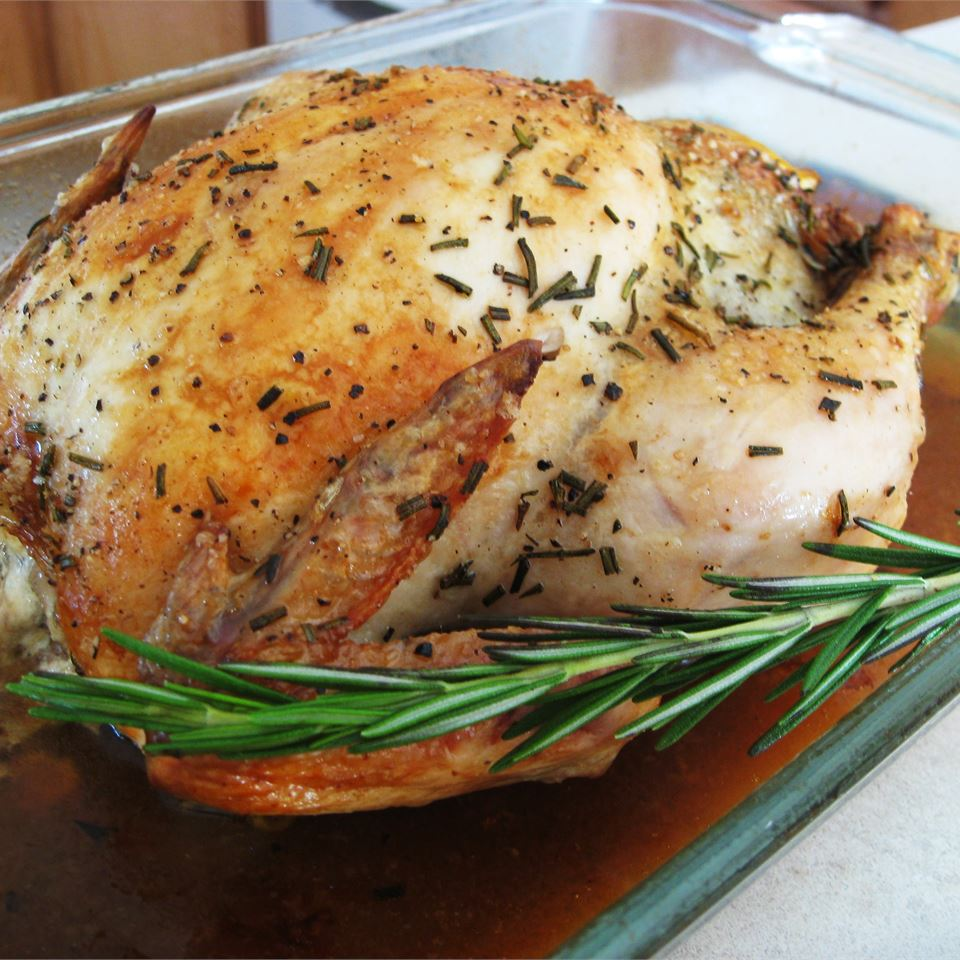

Roast Chicken with Rosemary

This is a recipe for roast chicken, by LILQUIZ
When I was in Vicenza, Italy at an open market downtown, I smelled this
scrumptious smell of roast chicken at this stand. So I bought one of their
chickens and looked what they stuffed in the cavity to make it taste so
good! I also do my turkeys like this too!
Ingredients
- 1 (3 pound) whole chicken, rinsed
- 1 small onion, quartered
- ¼ cup chopped fresh rosemary
- salt and pepper to taste
Steps
- Preheat oven to 350 degrees F (175 degrees C).
-
Season chicken with salt and pepper to taste. Stuff with the onion and
rosemary. Place chicken in a 9x13 inch baking dish or roasting dish.
-
Roast in the preheated oven for 2 to 2 1/2 hours, or until chicken is
cooked through and juices run clear. Cooking time will vary a bit
depending on the size of the bird.